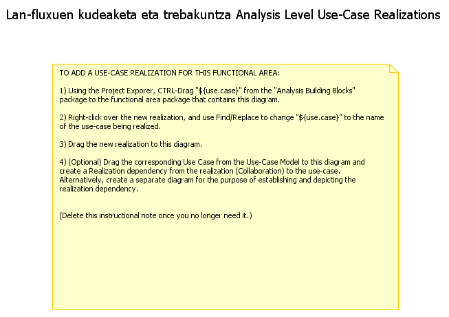

| Documentación UML de Lan-fluxuen kudeaketa eta trebakuntza |
|  |
Propiedades:
| Alias | |
| Estereotipo | |
| Name | Lan-fluxuen kudeaketa eta trebakuntza |
| Name Expression | |
| Namespace | RUP Analisi eredua |
| Nesting Package | RUP Analisi eredua |
| Owned Template Signature | |
| Owner | RUP Analisi eredua |
| Owning Template Parameter | |
| Palabras clave | |
| Qualified Name | RUP Analisi eredua::Lan-fluxuen kudeaketa eta trebakuntza |
| Template Parameter | |
| Visibility | Public |
| Documentación UML de Lan-fluxuen kudeaketa eta trebakuntza |